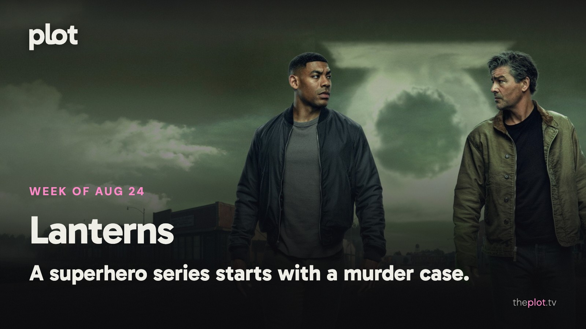

|
the week of August 24
|
|
Lanterns is investigating a murder, Outer Banks is taking its final bow, and neither group seems likely to clear the schedule early. In theaters, Jason Statham has another reason to be furious. Coming Friday: a coyote with a legal claim, survivors looking beyond the end of the world, and a missing-child thriller with an ominously familiar case.
 Image: Lanterns (2026), promotional backdrop. Source: TMDB. Text overlay by Plot.
In theaters
 Image: Mutiny (2026), promotional backdrop. Source: TMDB.
Mutiny gives Jason Statham a murder accusation and an international conspiracy. The new action thriller is a useful answer to the friend who wants a movie where the lead solves problems directly. Very directly.
Insidious: Out of the Further brings another encounter with the franchise's dangerous supernatural realm. For the group that already knows it enjoys these particular scares. Familiarity is not much protection for the people inside the film.
The suburban family in The End of Oak Street is still having a far worse summer than yours. David Robert Mitchell sends a whole neighborhood into the unknown. An original large-screen adventure for anyone wanting a break from a recognizable franchise logo.
What everyone's talking about
Lanterns has a strong opening argument for a superhero series: make the audience care about a case before asking them to learn a universe. Le Monde reads its leads as flawed people rather than polished saviors. TVLine likes the early grit and chemistry but finds comic-book lore crowding in. That makes a useful expectation for the HBO series. The rural murder mystery is the entry point; whether you want the larger mythology that follows may decide how long you stay.
 Image: Outer Banks (2020), promotional backdrop. Source: TMDB.
Outer Banks was never where you went for calm judgment. Its final season now has to turn years of impulsive adventure into a goodbye. TheWrap finds an entertaining but overfilled conclusion. In a fan discussion after the finale, affection for the ride meets frustration with the writing. Those feelings can coexist. Fans aren't only evaluating a treasure-hunt plot; they are deciding whether the ending makes good use of the time they spent with these people.
Production note. This line is not in the sent letter.
GIF: Arriving with an extremely organized list of grievances. Savannah to choose the GIF. Now on TV and Streaming
 Image: Facing El Chapo (2026), promotional backdrop. Source: TMDB.
Facing El Chapo is Netflix's new crime film. Two officers cross a cartel boss and have to survive the rest of their shift. A compact setup for the viewer who likes a workday thriller with absolutely no possibility of clocking off on time.
Outer Banks' final season is on Netflix. The treasure-hunting friends are nearing the end of their story. A catch-up project for the viewer who wants one last visit with the Pogues before closing that particular tab.
Coming up
|
|
You're receiving this because you subscribed at theplot.tv.
Unsubscribe
SUSUMU HOUSE · Level 1, 63-73 Ann Street, Surry Hills, NSW 2010 |
 Play the official trailer
Play the official trailer Play the official trailer
Play the official trailer Play the official trailer
Play the official trailer